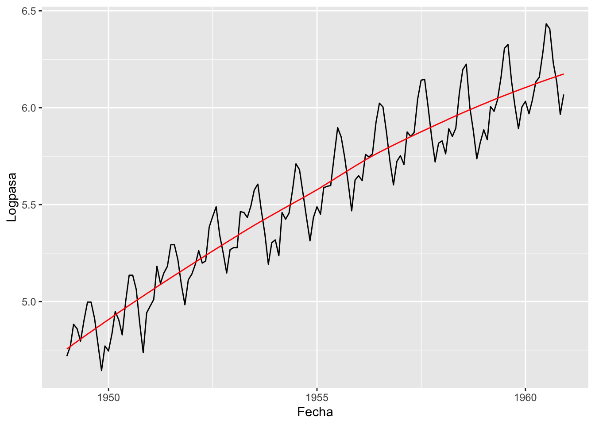
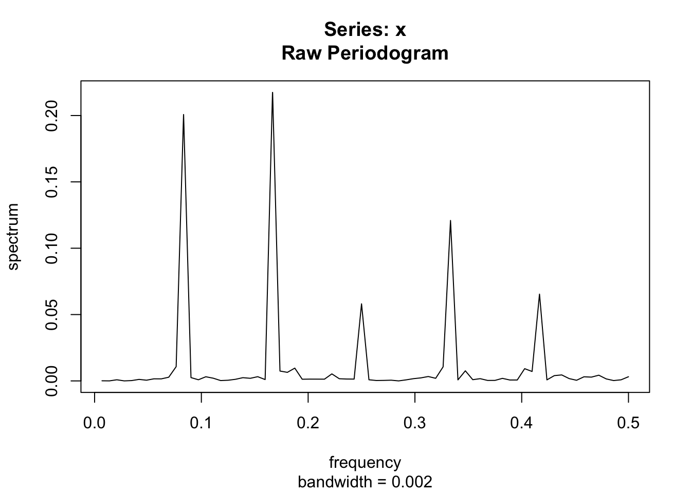

data("AirPassengers")
plot(AirPassengers)
Vamos a llevara a cabo un ejemplo con los pasos de la estadística descriptiva en series de tiempo para la serie de pasajeros y un primer modelamiento desde suavizamiento exponencial.
Vamos primero a visualizar la serie de tiempo de pasajeros.
data("AirPassengers")
plot(AirPassengers)
Recuerden que la serie presenta:
Heterocedasticidad Marginal: ya que visualmente el rango de valores que va tomando la variable se va haciendo cada vez mayor. Se debe estabilizar vía transformación Box-Cox.
Tendencia: La serie es creciente con el tiempo aparentemente de forma lineal. Se puede estimar la tendencia(determinística lineal) y despúes eliminar la tendencia. También se puede eliminar la tendencia mediante diferencia ordinaria y posterior
Componente estacional: Hay claridad de la existencia de una componente estacional de periodo s=12. Debido a que la serie es mensual y usualmente de haber esta componente, ella es de periodo s=12 , sin embargo vamos a proceder a identificarla usando las herramientas, basadas en una serie sin tendencia.
Primero procedemos a estabilizar la varianza.
class(AirPassengers) ###Clase del objeto.[1] "ts"library(forecast)Registered S3 method overwritten by 'quantmod':
method from
as.zoo.data.frame zoo library(MASS)
forecast::BoxCox.lambda(AirPassengers, method ="loglik", lower = -1, upper = 3)[1] 0.2##Recordar que la funcion nos entrega el valor de lambda
MASS::boxcox(lm(AirPassengers ~ 1),seq(-2, 3, length = 50)) ##Coincide con el anterior valor de lambda.
lAirPass<-log(AirPassengers)
plot(lAirPass)
MASS::boxcox(lm(lAirPass ~ 1),seq(-5, 5, length = 50)) ##Coincide con el anterior
forecast::BoxCox.lambda(lAirPass, method ="loglik", lower = -5, upper = 5)[1] 2.1Note que el valor de \(\lambda\) para estabilizar la varianza es 0.2, el cual está cerca de 0, axemás note que el IC para \(\lambda\) no captura el 1. Por lo tanto usaremos \(\lambda=0\), es decir, transformación logarítmica. Note que después de la transformación logarítmica volvemos a evaluar el IC para \(\lambda\) ahora para la serie transformada, y podemos ver que ahora es mas grande pero captura el 1, con lo cual la transformación logarítmica parece haber estabilizado la varianza.
Segundo procederemos a estimar la tendencia de forma preliminar. Iniciamos con una tendencia lineal determinística.
summary(fit_pasajero <- lm(lAirPass~time(lAirPass), na.action=NULL))
Call:
lm(formula = lAirPass ~ time(lAirPass), na.action = NULL)
Residuals:
Min 1Q Median 3Q Max
-0.30858 -0.10388 -0.01796 0.09738 0.29538
Coefficients:
Estimate Std. Error t value Pr(>|t|)
(Intercept) -2.302e+02 6.539e+00 -35.20 <2e-16 ***
time(lAirPass) 1.206e-01 3.345e-03 36.05 <2e-16 ***
---
Signif. codes: 0 '***' 0.001 '**' 0.01 '*' 0.05 '.' 0.1 ' ' 1
Residual standard error: 0.139 on 142 degrees of freedom
Multiple R-squared: 0.9015, Adjusted R-squared: 0.9008
F-statistic: 1300 on 1 and 142 DF, p-value: < 2.2e-16plot(lAirPass, ylab="Número de Pasajeros en escala logarítmica")
abline(fit_pasajero,col = "red") # Se añade la recta ajusta
###Eliminamos la tendencia con la predicción la recta
NoTendlAirPass=lAirPass-predict(fit_pasajero)
plot(NoTendlAirPass,main="Serie Log Pasajeros Sin tendencia")
acf(NoTendlAirPass,lag.max =length(NoTendlAirPass) )
Note que la serie, obtenida después de haber eliminado la tendencia lineal manifiesta hay un lento de su acf, en especial en rezagos múltiplos de 12. Esto podría sugerir la presencia de una componente estacional.
Veamos ahora la estimación de la tendencia desde filtro de promedio móviles y mediante STL. Recuerde que no hemos identificado la componente estacional, por lo tanto, lo obtenido descomposición de filtro de promedio móviles es una estimación preliminar.
descomposicion_lAirPass=decompose(lAirPass)
plot(descomposicion_lAirPass)
Note que por filtro de promedio móvil, la tendencia estimada es aproximadamente lineal. La componente estacional parece haberse estimada de forma idónea. Sin embargo, la componente residual presenta aún patrones estacionales.
Ahora procedamos a estimar la tenencia desde STL.
library(tidyverse)── Attaching core tidyverse packages ──────────────────────── tidyverse 2.0.0 ──
✔ dplyr 1.1.3 ✔ readr 2.1.4
✔ forcats 1.0.0 ✔ stringr 1.5.0
✔ ggplot2 3.4.3 ✔ tibble 3.2.1
✔ lubridate 1.9.2 ✔ tidyr 1.3.0
✔ purrr 1.0.2
── Conflicts ────────────────────────────────────────── tidyverse_conflicts() ──
✖ dplyr::filter() masks stats::filter()
✖ dplyr::lag() masks stats::lag()
✖ dplyr::select() masks MASS::select()
ℹ Use the conflicted package (<http://conflicted.r-lib.org/>) to force all conflicts to become errorslibrary(lubridate)
library(timetk)
library(tibble)
library(zoo)
Attaching package: 'zoo'
The following objects are masked from 'package:base':
as.Date, as.Date.numericindice_logpasajeros=as.Date(as.yearmon(tk_index(lAirPass)))
## Otra forma de extraer el indice estimetk::tk_index(lAirPass)
df_logpasajeros=data.frame(Fecha=indice_logpasajeros,Logpasa=as.matrix(lAirPass))
str(df_logpasajeros)'data.frame': 144 obs. of 2 variables:
$ Fecha : Date, format: "1949-01-01" "1949-02-01" ...
$ Logpasa: num 4.72 4.77 4.88 4.86 4.8 ...tibble_logpasajeros=tibble(df_logpasajeros)
#duplicates(tibble_logpasajeros, key = NULL, index=Fecha) ##Mirar si hay registros duplicados
####Primera aproximación del ajuste STL
tibble_logpasajeros%>%timetk::plot_time_series(Fecha, Logpasa,
.interactive = TRUE,
.plotly_slider = TRUE)#####Ajuste STL
#Note que obtenemos un objeto adicional en tibble_logpasajeros con Logpasa_ajus con parámetros que se pueden mover.
tibble_logpasajeros%>%mutate(Logpasa_ajus=smooth_vec(Logpasa,span = 0.75, degree = 2))# A tibble: 144 × 3
Fecha Logpasa Logpasa_ajus
<date> <dbl> <dbl>
1 1949-01-01 4.72 4.76
2 1949-02-01 4.77 4.77
3 1949-03-01 4.88 4.78
4 1949-04-01 4.86 4.79
5 1949-05-01 4.80 4.81
6 1949-06-01 4.91 4.82
7 1949-07-01 5.00 4.83
8 1949-08-01 5.00 4.84
9 1949-09-01 4.91 4.86
10 1949-10-01 4.78 4.87
# ℹ 134 more rows###Ajuste STL moviendo los parámetros
tibble_logpasajeros%>%mutate(Logpasa_ajus=smooth_vec(Logpasa,span = 0.75, degree = 2))%>%
ggplot(aes(Fecha, Logpasa)) +
geom_line() +
geom_line(aes(y = Logpasa_ajus), color = "red")
Usted puede usar el objeto \(tibble\_logpasajeros\$Logpasa\) para eliminar la tendencia obtenida de STL. Recuerde que puede hacer un procedimiento similar a STL para obtener una estimación de la componente de tendencia y estacional de forma automática sin controlar los parámetros de la tendencia. Note que los parámetros para estimar la tendencia y la componente estacional son distintos ahora que se usa la función STL.
library(feasts)Loading required package: fabletools
Attaching package: 'fabletools'The following object is masked from 'package:forecast':
accuracylibrary(fable)
library(tsibble)
Attaching package: 'tsibble'The following object is masked from 'package:zoo':
indexThe following object is masked from 'package:lubridate':
intervalThe following objects are masked from 'package:base':
intersect, setdiff, uniontsibble_lAirPass<-as_tsibble(lAirPass)
str(tsibble_lAirPass)tbl_ts [144 × 2] (S3: tbl_ts/tbl_df/tbl/data.frame)
$ index: mth [1:144] 1949 Jan, 1949 Feb, 1949 Mar, 1949 Apr, 1949 May, 1949 Jun...
$ value: num [1:144] 4.72 4.77 4.88 4.86 4.8 ...
- attr(*, "key")= tibble [1 × 1] (S3: tbl_df/tbl/data.frame)
..$ .rows: list<int> [1:1]
.. ..$ : int [1:144] 1 2 3 4 5 6 7 8 9 10 ...
.. ..@ ptype: int(0)
- attr(*, "index")= chr "index"
..- attr(*, "ordered")= logi TRUE
- attr(*, "index2")= chr "index"
- attr(*, "interval")= interval [1:1] 1M
..@ .regular: logi TRUEtsibble_lAirPass %>%
model(
STL(value ~ trend() +
season(window = "periodic"),
robust = TRUE)) %>%
components() %>%
autoplot()
Veamos ahora la serie de los pasajeros en escala logarítmica después de la diferenciación ordinaria para eliminar la tendencia.
###Usando objeto tsibble
tsibble_lAirPass|>mutate(diff_lAirPass=tsibble::difference(value,lag=1,differences = 1))|>
autoplot(.vars =diff_lAirPass ) + labs(subtitle = "Cambios en escala logarítmica de los pasajeros")Warning: Removed 1 row containing missing values (`geom_line()`).
tsibble_lAirPass<-tsibble_lAirPass|>mutate(diff_lAirPass=tsibble::difference(value,lag=1,differences = 1))
###Diferenciando basado en el objeto tibble
tibble_logpasajeros%>%mutate(diff_Logpasa=Logpasa-lag(Logpasa))%>%plot_time_series(Fecha,diff_Logpasa)tibble_logpasajeros<-tibble_logpasajeros%>%mutate(diff_Logpasa=Logpasa-lag(Logpasa))
###Diferenciando con base en el objeto ts
dlAirPass<-diff(lAirPass)
plot(dlAirPass)
Note que todos los objetos dejan NA cuando se usa aplioca la diferenciación excepto cuando el objeto es ts.
Recordemos que la idea de la detección de la estacionalidad consiste en ver si en ciertos periodos de tiempo las medias en esos periodos son distintos, adicionalmente hay que encontrar el periodo del ciclo estacional(s), es decir cuantos periodos de tiempo pasan hasta ver que la media sea análoga.
Iniciaremos con la la gráfica de subseries de la serie sin tendencia.
###Dado que la serie es mensual, monthplot permite hacer los gráficos de las subseries.
monthplot(dlAirPass) ##Note hay meses muchas subseries están centradas alrededor de valores diferentes usando el objeto ts
tsibble_lAirPass%>%na.omit()|>gg_subseries(diff_lAirPass,period=12) ##Gráfico de subseries usando el objeto tibble
tibble_logpasajeros %>%na.omit()|>
mutate(
Mes = str_c("", as.character(lubridate::month(Fecha,label=TRUE)))
) %>%
plot_time_series(
.date_var = Fecha,
.value = diff_Logpasa,
.facet_vars = Mes,
.facet_ncol = 4,
.color_var = Mes,
.facet_scales = "fixed",
.interactive = FALSE,
.legend_show = FALSE,
.smooth = FALSE
)
library(forecast)
ggseasonplot(dlAirPass)
Explorando la estacionalidad con gráficos de cajas
##Basado en el objeto tibble
tibble_logpasajeros%>%na.omit()%>%plot_seasonal_diagnostics(.date_var = Fecha,.value = diff_Logpasa,.feature_set = c("month.lbl"),.geom="boxplot")ggplot(tibble_logpasajeros %>%na.omit()|>
mutate(
Mes = str_c("Mes ", as.character(lubridate::month(Fecha)))
), aes(x = diff_Logpasa)) +
geom_density(aes(fill = Mes)) +
ggtitle("LosPass - Estimación de la densidad vía Kernel por mes") +
facet_grid(rows = vars(as.factor(Mes)))
spectrum(as.numeric(dlAirPass),log='no')
PeriodgramadlAirPass=spectrum(as.numeric(dlAirPass),log='no')
ubicacionlogAir=which.max(PeriodgramadlAirPass$spec)
sprintf("El valor de la frecuencia donde se máximiza el periodograma para la serie es: %s",PeriodgramadlAirPass$freq[ubicacionlogAir])[1] "El valor de la frecuencia donde se máximiza el periodograma para la serie es: 0.166666666666667"sprintf("El periodo correspondiente es aproximadamente: %s",1/PeriodgramadlAirPass$freq[ubicacionlogAir])[1] "El periodo correspondiente es aproximadamente: 6"Note que e periodo es 6, sin embargo 6 no es periodo principal para este caso, sería 12 ya que 6 es un múltiplo racional de 12.
library(tidyverse)
library(tsibble)
library(fable)
library(fabletools)
library(TSA)Registered S3 methods overwritten by 'TSA':
method from
fitted.Arima forecast
plot.Arima forecast
Attaching package: 'TSA'The following object is masked from 'package:readr':
specThe following objects are masked from 'package:stats':
acf, arimaThe following object is masked from 'package:utils':
tartsibble_Airpass=as_tsibble(AirPassengers)
###Variables Dummy y Armónicos
forecast::seasonaldummy(AirPassengers) Jan Feb Mar Apr May Jun Jul Aug Sep Oct Nov
[1,] 1 0 0 0 0 0 0 0 0 0 0
[2,] 0 1 0 0 0 0 0 0 0 0 0
[3,] 0 0 1 0 0 0 0 0 0 0 0
[4,] 0 0 0 1 0 0 0 0 0 0 0
[5,] 0 0 0 0 1 0 0 0 0 0 0
[6,] 0 0 0 0 0 1 0 0 0 0 0
[7,] 0 0 0 0 0 0 1 0 0 0 0
[8,] 0 0 0 0 0 0 0 1 0 0 0
[9,] 0 0 0 0 0 0 0 0 1 0 0
[10,] 0 0 0 0 0 0 0 0 0 1 0
[11,] 0 0 0 0 0 0 0 0 0 0 1
[12,] 0 0 0 0 0 0 0 0 0 0 0
[13,] 1 0 0 0 0 0 0 0 0 0 0
[14,] 0 1 0 0 0 0 0 0 0 0 0
[15,] 0 0 1 0 0 0 0 0 0 0 0
[16,] 0 0 0 1 0 0 0 0 0 0 0
[17,] 0 0 0 0 1 0 0 0 0 0 0
[18,] 0 0 0 0 0 1 0 0 0 0 0
[19,] 0 0 0 0 0 0 1 0 0 0 0
[20,] 0 0 0 0 0 0 0 1 0 0 0
[21,] 0 0 0 0 0 0 0 0 1 0 0
[22,] 0 0 0 0 0 0 0 0 0 1 0
[23,] 0 0 0 0 0 0 0 0 0 0 1
[24,] 0 0 0 0 0 0 0 0 0 0 0
[25,] 1 0 0 0 0 0 0 0 0 0 0
[26,] 0 1 0 0 0 0 0 0 0 0 0
[27,] 0 0 1 0 0 0 0 0 0 0 0
[28,] 0 0 0 1 0 0 0 0 0 0 0
[29,] 0 0 0 0 1 0 0 0 0 0 0
[30,] 0 0 0 0 0 1 0 0 0 0 0
[31,] 0 0 0 0 0 0 1 0 0 0 0
[32,] 0 0 0 0 0 0 0 1 0 0 0
[33,] 0 0 0 0 0 0 0 0 1 0 0
[34,] 0 0 0 0 0 0 0 0 0 1 0
[35,] 0 0 0 0 0 0 0 0 0 0 1
[36,] 0 0 0 0 0 0 0 0 0 0 0
[37,] 1 0 0 0 0 0 0 0 0 0 0
[38,] 0 1 0 0 0 0 0 0 0 0 0
[39,] 0 0 1 0 0 0 0 0 0 0 0
[40,] 0 0 0 1 0 0 0 0 0 0 0
[41,] 0 0 0 0 1 0 0 0 0 0 0
[42,] 0 0 0 0 0 1 0 0 0 0 0
[43,] 0 0 0 0 0 0 1 0 0 0 0
[44,] 0 0 0 0 0 0 0 1 0 0 0
[45,] 0 0 0 0 0 0 0 0 1 0 0
[46,] 0 0 0 0 0 0 0 0 0 1 0
[47,] 0 0 0 0 0 0 0 0 0 0 1
[48,] 0 0 0 0 0 0 0 0 0 0 0
[49,] 1 0 0 0 0 0 0 0 0 0 0
[50,] 0 1 0 0 0 0 0 0 0 0 0
[51,] 0 0 1 0 0 0 0 0 0 0 0
[52,] 0 0 0 1 0 0 0 0 0 0 0
[53,] 0 0 0 0 1 0 0 0 0 0 0
[54,] 0 0 0 0 0 1 0 0 0 0 0
[55,] 0 0 0 0 0 0 1 0 0 0 0
[56,] 0 0 0 0 0 0 0 1 0 0 0
[57,] 0 0 0 0 0 0 0 0 1 0 0
[58,] 0 0 0 0 0 0 0 0 0 1 0
[59,] 0 0 0 0 0 0 0 0 0 0 1
[60,] 0 0 0 0 0 0 0 0 0 0 0
[61,] 1 0 0 0 0 0 0 0 0 0 0
[62,] 0 1 0 0 0 0 0 0 0 0 0
[63,] 0 0 1 0 0 0 0 0 0 0 0
[64,] 0 0 0 1 0 0 0 0 0 0 0
[65,] 0 0 0 0 1 0 0 0 0 0 0
[66,] 0 0 0 0 0 1 0 0 0 0 0
[67,] 0 0 0 0 0 0 1 0 0 0 0
[68,] 0 0 0 0 0 0 0 1 0 0 0
[69,] 0 0 0 0 0 0 0 0 1 0 0
[70,] 0 0 0 0 0 0 0 0 0 1 0
[71,] 0 0 0 0 0 0 0 0 0 0 1
[72,] 0 0 0 0 0 0 0 0 0 0 0
[73,] 1 0 0 0 0 0 0 0 0 0 0
[74,] 0 1 0 0 0 0 0 0 0 0 0
[75,] 0 0 1 0 0 0 0 0 0 0 0
[76,] 0 0 0 1 0 0 0 0 0 0 0
[77,] 0 0 0 0 1 0 0 0 0 0 0
[78,] 0 0 0 0 0 1 0 0 0 0 0
[79,] 0 0 0 0 0 0 1 0 0 0 0
[80,] 0 0 0 0 0 0 0 1 0 0 0
[81,] 0 0 0 0 0 0 0 0 1 0 0
[82,] 0 0 0 0 0 0 0 0 0 1 0
[83,] 0 0 0 0 0 0 0 0 0 0 1
[84,] 0 0 0 0 0 0 0 0 0 0 0
[85,] 1 0 0 0 0 0 0 0 0 0 0
[86,] 0 1 0 0 0 0 0 0 0 0 0
[87,] 0 0 1 0 0 0 0 0 0 0 0
[88,] 0 0 0 1 0 0 0 0 0 0 0
[89,] 0 0 0 0 1 0 0 0 0 0 0
[90,] 0 0 0 0 0 1 0 0 0 0 0
[91,] 0 0 0 0 0 0 1 0 0 0 0
[92,] 0 0 0 0 0 0 0 1 0 0 0
[93,] 0 0 0 0 0 0 0 0 1 0 0
[94,] 0 0 0 0 0 0 0 0 0 1 0
[95,] 0 0 0 0 0 0 0 0 0 0 1
[96,] 0 0 0 0 0 0 0 0 0 0 0
[97,] 1 0 0 0 0 0 0 0 0 0 0
[98,] 0 1 0 0 0 0 0 0 0 0 0
[99,] 0 0 1 0 0 0 0 0 0 0 0
[100,] 0 0 0 1 0 0 0 0 0 0 0
[101,] 0 0 0 0 1 0 0 0 0 0 0
[102,] 0 0 0 0 0 1 0 0 0 0 0
[103,] 0 0 0 0 0 0 1 0 0 0 0
[104,] 0 0 0 0 0 0 0 1 0 0 0
[105,] 0 0 0 0 0 0 0 0 1 0 0
[106,] 0 0 0 0 0 0 0 0 0 1 0
[107,] 0 0 0 0 0 0 0 0 0 0 1
[108,] 0 0 0 0 0 0 0 0 0 0 0
[109,] 1 0 0 0 0 0 0 0 0 0 0
[110,] 0 1 0 0 0 0 0 0 0 0 0
[111,] 0 0 1 0 0 0 0 0 0 0 0
[112,] 0 0 0 1 0 0 0 0 0 0 0
[113,] 0 0 0 0 1 0 0 0 0 0 0
[114,] 0 0 0 0 0 1 0 0 0 0 0
[115,] 0 0 0 0 0 0 1 0 0 0 0
[116,] 0 0 0 0 0 0 0 1 0 0 0
[117,] 0 0 0 0 0 0 0 0 1 0 0
[118,] 0 0 0 0 0 0 0 0 0 1 0
[119,] 0 0 0 0 0 0 0 0 0 0 1
[120,] 0 0 0 0 0 0 0 0 0 0 0
[121,] 1 0 0 0 0 0 0 0 0 0 0
[122,] 0 1 0 0 0 0 0 0 0 0 0
[123,] 0 0 1 0 0 0 0 0 0 0 0
[124,] 0 0 0 1 0 0 0 0 0 0 0
[125,] 0 0 0 0 1 0 0 0 0 0 0
[126,] 0 0 0 0 0 1 0 0 0 0 0
[127,] 0 0 0 0 0 0 1 0 0 0 0
[128,] 0 0 0 0 0 0 0 1 0 0 0
[129,] 0 0 0 0 0 0 0 0 1 0 0
[130,] 0 0 0 0 0 0 0 0 0 1 0
[131,] 0 0 0 0 0 0 0 0 0 0 1
[132,] 0 0 0 0 0 0 0 0 0 0 0
[133,] 1 0 0 0 0 0 0 0 0 0 0
[134,] 0 1 0 0 0 0 0 0 0 0 0
[135,] 0 0 1 0 0 0 0 0 0 0 0
[136,] 0 0 0 1 0 0 0 0 0 0 0
[137,] 0 0 0 0 1 0 0 0 0 0 0
[138,] 0 0 0 0 0 1 0 0 0 0 0
[139,] 0 0 0 0 0 0 1 0 0 0 0
[140,] 0 0 0 0 0 0 0 1 0 0 0
[141,] 0 0 0 0 0 0 0 0 1 0 0
[142,] 0 0 0 0 0 0 0 0 0 1 0
[143,] 0 0 0 0 0 0 0 0 0 0 1
[144,] 0 0 0 0 0 0 0 0 0 0 0Armonicos=TSA::harmonic(AirPassengers, m = 1)
###Armónicos
forecast::fourier(AirPassengers,K=1) S1-12 C1-12
[1,] 0.5000000 0.8660254
[2,] 0.8660254 0.5000000
[3,] 1.0000000 0.0000000
[4,] 0.8660254 -0.5000000
[5,] 0.5000000 -0.8660254
[6,] 0.0000000 -1.0000000
[7,] -0.5000000 -0.8660254
[8,] -0.8660254 -0.5000000
[9,] -1.0000000 0.0000000
[10,] -0.8660254 0.5000000
[11,] -0.5000000 0.8660254
[12,] 0.0000000 1.0000000
[13,] 0.5000000 0.8660254
[14,] 0.8660254 0.5000000
[15,] 1.0000000 0.0000000
[16,] 0.8660254 -0.5000000
[17,] 0.5000000 -0.8660254
[18,] 0.0000000 -1.0000000
[19,] -0.5000000 -0.8660254
[20,] -0.8660254 -0.5000000
[21,] -1.0000000 0.0000000
[22,] -0.8660254 0.5000000
[23,] -0.5000000 0.8660254
[24,] 0.0000000 1.0000000
[25,] 0.5000000 0.8660254
[26,] 0.8660254 0.5000000
[27,] 1.0000000 0.0000000
[28,] 0.8660254 -0.5000000
[29,] 0.5000000 -0.8660254
[30,] 0.0000000 -1.0000000
[31,] -0.5000000 -0.8660254
[32,] -0.8660254 -0.5000000
[33,] -1.0000000 0.0000000
[34,] -0.8660254 0.5000000
[35,] -0.5000000 0.8660254
[36,] 0.0000000 1.0000000
[37,] 0.5000000 0.8660254
[38,] 0.8660254 0.5000000
[39,] 1.0000000 0.0000000
[40,] 0.8660254 -0.5000000
[41,] 0.5000000 -0.8660254
[42,] 0.0000000 -1.0000000
[43,] -0.5000000 -0.8660254
[44,] -0.8660254 -0.5000000
[45,] -1.0000000 0.0000000
[46,] -0.8660254 0.5000000
[47,] -0.5000000 0.8660254
[48,] 0.0000000 1.0000000
[49,] 0.5000000 0.8660254
[50,] 0.8660254 0.5000000
[51,] 1.0000000 0.0000000
[52,] 0.8660254 -0.5000000
[53,] 0.5000000 -0.8660254
[54,] 0.0000000 -1.0000000
[55,] -0.5000000 -0.8660254
[56,] -0.8660254 -0.5000000
[57,] -1.0000000 0.0000000
[58,] -0.8660254 0.5000000
[59,] -0.5000000 0.8660254
[60,] 0.0000000 1.0000000
[61,] 0.5000000 0.8660254
[62,] 0.8660254 0.5000000
[63,] 1.0000000 0.0000000
[64,] 0.8660254 -0.5000000
[65,] 0.5000000 -0.8660254
[66,] 0.0000000 -1.0000000
[67,] -0.5000000 -0.8660254
[68,] -0.8660254 -0.5000000
[69,] -1.0000000 0.0000000
[70,] -0.8660254 0.5000000
[71,] -0.5000000 0.8660254
[72,] 0.0000000 1.0000000
[73,] 0.5000000 0.8660254
[74,] 0.8660254 0.5000000
[75,] 1.0000000 0.0000000
[76,] 0.8660254 -0.5000000
[77,] 0.5000000 -0.8660254
[78,] 0.0000000 -1.0000000
[79,] -0.5000000 -0.8660254
[80,] -0.8660254 -0.5000000
[81,] -1.0000000 0.0000000
[82,] -0.8660254 0.5000000
[83,] -0.5000000 0.8660254
[84,] 0.0000000 1.0000000
[85,] 0.5000000 0.8660254
[86,] 0.8660254 0.5000000
[87,] 1.0000000 0.0000000
[88,] 0.8660254 -0.5000000
[89,] 0.5000000 -0.8660254
[90,] 0.0000000 -1.0000000
[91,] -0.5000000 -0.8660254
[92,] -0.8660254 -0.5000000
[93,] -1.0000000 0.0000000
[94,] -0.8660254 0.5000000
[95,] -0.5000000 0.8660254
[96,] 0.0000000 1.0000000
[97,] 0.5000000 0.8660254
[98,] 0.8660254 0.5000000
[99,] 1.0000000 0.0000000
[100,] 0.8660254 -0.5000000
[101,] 0.5000000 -0.8660254
[102,] 0.0000000 -1.0000000
[103,] -0.5000000 -0.8660254
[104,] -0.8660254 -0.5000000
[105,] -1.0000000 0.0000000
[106,] -0.8660254 0.5000000
[107,] -0.5000000 0.8660254
[108,] 0.0000000 1.0000000
[109,] 0.5000000 0.8660254
[110,] 0.8660254 0.5000000
[111,] 1.0000000 0.0000000
[112,] 0.8660254 -0.5000000
[113,] 0.5000000 -0.8660254
[114,] 0.0000000 -1.0000000
[115,] -0.5000000 -0.8660254
[116,] -0.8660254 -0.5000000
[117,] -1.0000000 0.0000000
[118,] -0.8660254 0.5000000
[119,] -0.5000000 0.8660254
[120,] 0.0000000 1.0000000
[121,] 0.5000000 0.8660254
[122,] 0.8660254 0.5000000
[123,] 1.0000000 0.0000000
[124,] 0.8660254 -0.5000000
[125,] 0.5000000 -0.8660254
[126,] 0.0000000 -1.0000000
[127,] -0.5000000 -0.8660254
[128,] -0.8660254 -0.5000000
[129,] -1.0000000 0.0000000
[130,] -0.8660254 0.5000000
[131,] -0.5000000 0.8660254
[132,] 0.0000000 1.0000000
[133,] 0.5000000 0.8660254
[134,] 0.8660254 0.5000000
[135,] 1.0000000 0.0000000
[136,] 0.8660254 -0.5000000
[137,] 0.5000000 -0.8660254
[138,] 0.0000000 -1.0000000
[139,] -0.5000000 -0.8660254
[140,] -0.8660254 -0.5000000
[141,] -1.0000000 0.0000000
[142,] -0.8660254 0.5000000
[143,] -0.5000000 0.8660254
[144,] 0.0000000 1.0000000tiempo=1
j=1
sin(2*pi*tiempo*j/12)[1] 0.5cos(2*pi*tiempo*j/12)[1] 0.8660254###Gráfica de los armónicos
harmonics = fourier(AirPassengers, K = 6)
harmonics S1-12 C1-12 S2-12 C2-12 S3-12 C3-12 S4-12 C4-12
[1,] 0.5000000 0.8660254 0.8660254 0.5 1 0 0.8660254 -0.5
[2,] 0.8660254 0.5000000 0.8660254 -0.5 0 -1 -0.8660254 -0.5
[3,] 1.0000000 0.0000000 0.0000000 -1.0 -1 0 0.0000000 1.0
[4,] 0.8660254 -0.5000000 -0.8660254 -0.5 0 1 0.8660254 -0.5
[5,] 0.5000000 -0.8660254 -0.8660254 0.5 1 0 -0.8660254 -0.5
[6,] 0.0000000 -1.0000000 0.0000000 1.0 0 -1 0.0000000 1.0
[7,] -0.5000000 -0.8660254 0.8660254 0.5 -1 0 0.8660254 -0.5
[8,] -0.8660254 -0.5000000 0.8660254 -0.5 0 1 -0.8660254 -0.5
[9,] -1.0000000 0.0000000 0.0000000 -1.0 1 0 0.0000000 1.0
[10,] -0.8660254 0.5000000 -0.8660254 -0.5 0 -1 0.8660254 -0.5
[11,] -0.5000000 0.8660254 -0.8660254 0.5 -1 0 -0.8660254 -0.5
[12,] 0.0000000 1.0000000 0.0000000 1.0 0 1 0.0000000 1.0
[13,] 0.5000000 0.8660254 0.8660254 0.5 1 0 0.8660254 -0.5
[14,] 0.8660254 0.5000000 0.8660254 -0.5 0 -1 -0.8660254 -0.5
[15,] 1.0000000 0.0000000 0.0000000 -1.0 -1 0 0.0000000 1.0
[16,] 0.8660254 -0.5000000 -0.8660254 -0.5 0 1 0.8660254 -0.5
[17,] 0.5000000 -0.8660254 -0.8660254 0.5 1 0 -0.8660254 -0.5
[18,] 0.0000000 -1.0000000 0.0000000 1.0 0 -1 0.0000000 1.0
[19,] -0.5000000 -0.8660254 0.8660254 0.5 -1 0 0.8660254 -0.5
[20,] -0.8660254 -0.5000000 0.8660254 -0.5 0 1 -0.8660254 -0.5
[21,] -1.0000000 0.0000000 0.0000000 -1.0 1 0 0.0000000 1.0
[22,] -0.8660254 0.5000000 -0.8660254 -0.5 0 -1 0.8660254 -0.5
[23,] -0.5000000 0.8660254 -0.8660254 0.5 -1 0 -0.8660254 -0.5
[24,] 0.0000000 1.0000000 0.0000000 1.0 0 1 0.0000000 1.0
[25,] 0.5000000 0.8660254 0.8660254 0.5 1 0 0.8660254 -0.5
[26,] 0.8660254 0.5000000 0.8660254 -0.5 0 -1 -0.8660254 -0.5
[27,] 1.0000000 0.0000000 0.0000000 -1.0 -1 0 0.0000000 1.0
[28,] 0.8660254 -0.5000000 -0.8660254 -0.5 0 1 0.8660254 -0.5
[29,] 0.5000000 -0.8660254 -0.8660254 0.5 1 0 -0.8660254 -0.5
[30,] 0.0000000 -1.0000000 0.0000000 1.0 0 -1 0.0000000 1.0
[31,] -0.5000000 -0.8660254 0.8660254 0.5 -1 0 0.8660254 -0.5
[32,] -0.8660254 -0.5000000 0.8660254 -0.5 0 1 -0.8660254 -0.5
[33,] -1.0000000 0.0000000 0.0000000 -1.0 1 0 0.0000000 1.0
[34,] -0.8660254 0.5000000 -0.8660254 -0.5 0 -1 0.8660254 -0.5
[35,] -0.5000000 0.8660254 -0.8660254 0.5 -1 0 -0.8660254 -0.5
[36,] 0.0000000 1.0000000 0.0000000 1.0 0 1 0.0000000 1.0
[37,] 0.5000000 0.8660254 0.8660254 0.5 1 0 0.8660254 -0.5
[38,] 0.8660254 0.5000000 0.8660254 -0.5 0 -1 -0.8660254 -0.5
[39,] 1.0000000 0.0000000 0.0000000 -1.0 -1 0 0.0000000 1.0
[40,] 0.8660254 -0.5000000 -0.8660254 -0.5 0 1 0.8660254 -0.5
[41,] 0.5000000 -0.8660254 -0.8660254 0.5 1 0 -0.8660254 -0.5
[42,] 0.0000000 -1.0000000 0.0000000 1.0 0 -1 0.0000000 1.0
[43,] -0.5000000 -0.8660254 0.8660254 0.5 -1 0 0.8660254 -0.5
[44,] -0.8660254 -0.5000000 0.8660254 -0.5 0 1 -0.8660254 -0.5
[45,] -1.0000000 0.0000000 0.0000000 -1.0 1 0 0.0000000 1.0
[46,] -0.8660254 0.5000000 -0.8660254 -0.5 0 -1 0.8660254 -0.5
[47,] -0.5000000 0.8660254 -0.8660254 0.5 -1 0 -0.8660254 -0.5
[48,] 0.0000000 1.0000000 0.0000000 1.0 0 1 0.0000000 1.0
[49,] 0.5000000 0.8660254 0.8660254 0.5 1 0 0.8660254 -0.5
[50,] 0.8660254 0.5000000 0.8660254 -0.5 0 -1 -0.8660254 -0.5
[51,] 1.0000000 0.0000000 0.0000000 -1.0 -1 0 0.0000000 1.0
[52,] 0.8660254 -0.5000000 -0.8660254 -0.5 0 1 0.8660254 -0.5
[53,] 0.5000000 -0.8660254 -0.8660254 0.5 1 0 -0.8660254 -0.5
[54,] 0.0000000 -1.0000000 0.0000000 1.0 0 -1 0.0000000 1.0
[55,] -0.5000000 -0.8660254 0.8660254 0.5 -1 0 0.8660254 -0.5
[56,] -0.8660254 -0.5000000 0.8660254 -0.5 0 1 -0.8660254 -0.5
[57,] -1.0000000 0.0000000 0.0000000 -1.0 1 0 0.0000000 1.0
[58,] -0.8660254 0.5000000 -0.8660254 -0.5 0 -1 0.8660254 -0.5
[59,] -0.5000000 0.8660254 -0.8660254 0.5 -1 0 -0.8660254 -0.5
[60,] 0.0000000 1.0000000 0.0000000 1.0 0 1 0.0000000 1.0
[61,] 0.5000000 0.8660254 0.8660254 0.5 1 0 0.8660254 -0.5
[62,] 0.8660254 0.5000000 0.8660254 -0.5 0 -1 -0.8660254 -0.5
[63,] 1.0000000 0.0000000 0.0000000 -1.0 -1 0 0.0000000 1.0
[64,] 0.8660254 -0.5000000 -0.8660254 -0.5 0 1 0.8660254 -0.5
[65,] 0.5000000 -0.8660254 -0.8660254 0.5 1 0 -0.8660254 -0.5
[66,] 0.0000000 -1.0000000 0.0000000 1.0 0 -1 0.0000000 1.0
[67,] -0.5000000 -0.8660254 0.8660254 0.5 -1 0 0.8660254 -0.5
[68,] -0.8660254 -0.5000000 0.8660254 -0.5 0 1 -0.8660254 -0.5
[69,] -1.0000000 0.0000000 0.0000000 -1.0 1 0 0.0000000 1.0
[70,] -0.8660254 0.5000000 -0.8660254 -0.5 0 -1 0.8660254 -0.5
[71,] -0.5000000 0.8660254 -0.8660254 0.5 -1 0 -0.8660254 -0.5
[72,] 0.0000000 1.0000000 0.0000000 1.0 0 1 0.0000000 1.0
[73,] 0.5000000 0.8660254 0.8660254 0.5 1 0 0.8660254 -0.5
[74,] 0.8660254 0.5000000 0.8660254 -0.5 0 -1 -0.8660254 -0.5
[75,] 1.0000000 0.0000000 0.0000000 -1.0 -1 0 0.0000000 1.0
[76,] 0.8660254 -0.5000000 -0.8660254 -0.5 0 1 0.8660254 -0.5
[77,] 0.5000000 -0.8660254 -0.8660254 0.5 1 0 -0.8660254 -0.5
[78,] 0.0000000 -1.0000000 0.0000000 1.0 0 -1 0.0000000 1.0
[79,] -0.5000000 -0.8660254 0.8660254 0.5 -1 0 0.8660254 -0.5
[80,] -0.8660254 -0.5000000 0.8660254 -0.5 0 1 -0.8660254 -0.5
[81,] -1.0000000 0.0000000 0.0000000 -1.0 1 0 0.0000000 1.0
[82,] -0.8660254 0.5000000 -0.8660254 -0.5 0 -1 0.8660254 -0.5
[83,] -0.5000000 0.8660254 -0.8660254 0.5 -1 0 -0.8660254 -0.5
[84,] 0.0000000 1.0000000 0.0000000 1.0 0 1 0.0000000 1.0
[85,] 0.5000000 0.8660254 0.8660254 0.5 1 0 0.8660254 -0.5
[86,] 0.8660254 0.5000000 0.8660254 -0.5 0 -1 -0.8660254 -0.5
[87,] 1.0000000 0.0000000 0.0000000 -1.0 -1 0 0.0000000 1.0
[88,] 0.8660254 -0.5000000 -0.8660254 -0.5 0 1 0.8660254 -0.5
[89,] 0.5000000 -0.8660254 -0.8660254 0.5 1 0 -0.8660254 -0.5
[90,] 0.0000000 -1.0000000 0.0000000 1.0 0 -1 0.0000000 1.0
[91,] -0.5000000 -0.8660254 0.8660254 0.5 -1 0 0.8660254 -0.5
[92,] -0.8660254 -0.5000000 0.8660254 -0.5 0 1 -0.8660254 -0.5
[93,] -1.0000000 0.0000000 0.0000000 -1.0 1 0 0.0000000 1.0
[94,] -0.8660254 0.5000000 -0.8660254 -0.5 0 -1 0.8660254 -0.5
[95,] -0.5000000 0.8660254 -0.8660254 0.5 -1 0 -0.8660254 -0.5
[96,] 0.0000000 1.0000000 0.0000000 1.0 0 1 0.0000000 1.0
[97,] 0.5000000 0.8660254 0.8660254 0.5 1 0 0.8660254 -0.5
[98,] 0.8660254 0.5000000 0.8660254 -0.5 0 -1 -0.8660254 -0.5
[99,] 1.0000000 0.0000000 0.0000000 -1.0 -1 0 0.0000000 1.0
[100,] 0.8660254 -0.5000000 -0.8660254 -0.5 0 1 0.8660254 -0.5
[101,] 0.5000000 -0.8660254 -0.8660254 0.5 1 0 -0.8660254 -0.5
[102,] 0.0000000 -1.0000000 0.0000000 1.0 0 -1 0.0000000 1.0
[103,] -0.5000000 -0.8660254 0.8660254 0.5 -1 0 0.8660254 -0.5
[104,] -0.8660254 -0.5000000 0.8660254 -0.5 0 1 -0.8660254 -0.5
[105,] -1.0000000 0.0000000 0.0000000 -1.0 1 0 0.0000000 1.0
[106,] -0.8660254 0.5000000 -0.8660254 -0.5 0 -1 0.8660254 -0.5
[107,] -0.5000000 0.8660254 -0.8660254 0.5 -1 0 -0.8660254 -0.5
[108,] 0.0000000 1.0000000 0.0000000 1.0 0 1 0.0000000 1.0
[109,] 0.5000000 0.8660254 0.8660254 0.5 1 0 0.8660254 -0.5
[110,] 0.8660254 0.5000000 0.8660254 -0.5 0 -1 -0.8660254 -0.5
[111,] 1.0000000 0.0000000 0.0000000 -1.0 -1 0 0.0000000 1.0
[112,] 0.8660254 -0.5000000 -0.8660254 -0.5 0 1 0.8660254 -0.5
[113,] 0.5000000 -0.8660254 -0.8660254 0.5 1 0 -0.8660254 -0.5
[114,] 0.0000000 -1.0000000 0.0000000 1.0 0 -1 0.0000000 1.0
[115,] -0.5000000 -0.8660254 0.8660254 0.5 -1 0 0.8660254 -0.5
[116,] -0.8660254 -0.5000000 0.8660254 -0.5 0 1 -0.8660254 -0.5
[117,] -1.0000000 0.0000000 0.0000000 -1.0 1 0 0.0000000 1.0
[118,] -0.8660254 0.5000000 -0.8660254 -0.5 0 -1 0.8660254 -0.5
[119,] -0.5000000 0.8660254 -0.8660254 0.5 -1 0 -0.8660254 -0.5
[120,] 0.0000000 1.0000000 0.0000000 1.0 0 1 0.0000000 1.0
[121,] 0.5000000 0.8660254 0.8660254 0.5 1 0 0.8660254 -0.5
[122,] 0.8660254 0.5000000 0.8660254 -0.5 0 -1 -0.8660254 -0.5
[123,] 1.0000000 0.0000000 0.0000000 -1.0 -1 0 0.0000000 1.0
[124,] 0.8660254 -0.5000000 -0.8660254 -0.5 0 1 0.8660254 -0.5
[125,] 0.5000000 -0.8660254 -0.8660254 0.5 1 0 -0.8660254 -0.5
[126,] 0.0000000 -1.0000000 0.0000000 1.0 0 -1 0.0000000 1.0
[127,] -0.5000000 -0.8660254 0.8660254 0.5 -1 0 0.8660254 -0.5
[128,] -0.8660254 -0.5000000 0.8660254 -0.5 0 1 -0.8660254 -0.5
[129,] -1.0000000 0.0000000 0.0000000 -1.0 1 0 0.0000000 1.0
[130,] -0.8660254 0.5000000 -0.8660254 -0.5 0 -1 0.8660254 -0.5
[131,] -0.5000000 0.8660254 -0.8660254 0.5 -1 0 -0.8660254 -0.5
[132,] 0.0000000 1.0000000 0.0000000 1.0 0 1 0.0000000 1.0
[133,] 0.5000000 0.8660254 0.8660254 0.5 1 0 0.8660254 -0.5
[134,] 0.8660254 0.5000000 0.8660254 -0.5 0 -1 -0.8660254 -0.5
[135,] 1.0000000 0.0000000 0.0000000 -1.0 -1 0 0.0000000 1.0
[136,] 0.8660254 -0.5000000 -0.8660254 -0.5 0 1 0.8660254 -0.5
[137,] 0.5000000 -0.8660254 -0.8660254 0.5 1 0 -0.8660254 -0.5
[138,] 0.0000000 -1.0000000 0.0000000 1.0 0 -1 0.0000000 1.0
[139,] -0.5000000 -0.8660254 0.8660254 0.5 -1 0 0.8660254 -0.5
[140,] -0.8660254 -0.5000000 0.8660254 -0.5 0 1 -0.8660254 -0.5
[141,] -1.0000000 0.0000000 0.0000000 -1.0 1 0 0.0000000 1.0
[142,] -0.8660254 0.5000000 -0.8660254 -0.5 0 -1 0.8660254 -0.5
[143,] -0.5000000 0.8660254 -0.8660254 0.5 -1 0 -0.8660254 -0.5
[144,] 0.0000000 1.0000000 0.0000000 1.0 0 1 0.0000000 1.0
S5-12 C5-12 C6-12
[1,] 0.5000000 -0.8660254 -1
[2,] -0.8660254 0.5000000 1
[3,] 1.0000000 0.0000000 -1
[4,] -0.8660254 -0.5000000 1
[5,] 0.5000000 0.8660254 -1
[6,] 0.0000000 -1.0000000 1
[7,] -0.5000000 0.8660254 -1
[8,] 0.8660254 -0.5000000 1
[9,] -1.0000000 0.0000000 -1
[10,] 0.8660254 0.5000000 1
[11,] -0.5000000 -0.8660254 -1
[12,] 0.0000000 1.0000000 1
[13,] 0.5000000 -0.8660254 -1
[14,] -0.8660254 0.5000000 1
[15,] 1.0000000 0.0000000 -1
[16,] -0.8660254 -0.5000000 1
[17,] 0.5000000 0.8660254 -1
[18,] 0.0000000 -1.0000000 1
[19,] -0.5000000 0.8660254 -1
[20,] 0.8660254 -0.5000000 1
[21,] -1.0000000 0.0000000 -1
[22,] 0.8660254 0.5000000 1
[23,] -0.5000000 -0.8660254 -1
[24,] 0.0000000 1.0000000 1
[25,] 0.5000000 -0.8660254 -1
[26,] -0.8660254 0.5000000 1
[27,] 1.0000000 0.0000000 -1
[28,] -0.8660254 -0.5000000 1
[29,] 0.5000000 0.8660254 -1
[30,] 0.0000000 -1.0000000 1
[31,] -0.5000000 0.8660254 -1
[32,] 0.8660254 -0.5000000 1
[33,] -1.0000000 0.0000000 -1
[34,] 0.8660254 0.5000000 1
[35,] -0.5000000 -0.8660254 -1
[36,] 0.0000000 1.0000000 1
[37,] 0.5000000 -0.8660254 -1
[38,] -0.8660254 0.5000000 1
[39,] 1.0000000 0.0000000 -1
[40,] -0.8660254 -0.5000000 1
[41,] 0.5000000 0.8660254 -1
[42,] 0.0000000 -1.0000000 1
[43,] -0.5000000 0.8660254 -1
[44,] 0.8660254 -0.5000000 1
[45,] -1.0000000 0.0000000 -1
[46,] 0.8660254 0.5000000 1
[47,] -0.5000000 -0.8660254 -1
[48,] 0.0000000 1.0000000 1
[49,] 0.5000000 -0.8660254 -1
[50,] -0.8660254 0.5000000 1
[51,] 1.0000000 0.0000000 -1
[52,] -0.8660254 -0.5000000 1
[53,] 0.5000000 0.8660254 -1
[54,] 0.0000000 -1.0000000 1
[55,] -0.5000000 0.8660254 -1
[56,] 0.8660254 -0.5000000 1
[57,] -1.0000000 0.0000000 -1
[58,] 0.8660254 0.5000000 1
[59,] -0.5000000 -0.8660254 -1
[60,] 0.0000000 1.0000000 1
[61,] 0.5000000 -0.8660254 -1
[62,] -0.8660254 0.5000000 1
[63,] 1.0000000 0.0000000 -1
[64,] -0.8660254 -0.5000000 1
[65,] 0.5000000 0.8660254 -1
[66,] 0.0000000 -1.0000000 1
[67,] -0.5000000 0.8660254 -1
[68,] 0.8660254 -0.5000000 1
[69,] -1.0000000 0.0000000 -1
[70,] 0.8660254 0.5000000 1
[71,] -0.5000000 -0.8660254 -1
[72,] 0.0000000 1.0000000 1
[73,] 0.5000000 -0.8660254 -1
[74,] -0.8660254 0.5000000 1
[75,] 1.0000000 0.0000000 -1
[76,] -0.8660254 -0.5000000 1
[77,] 0.5000000 0.8660254 -1
[78,] 0.0000000 -1.0000000 1
[79,] -0.5000000 0.8660254 -1
[80,] 0.8660254 -0.5000000 1
[81,] -1.0000000 0.0000000 -1
[82,] 0.8660254 0.5000000 1
[83,] -0.5000000 -0.8660254 -1
[84,] 0.0000000 1.0000000 1
[85,] 0.5000000 -0.8660254 -1
[86,] -0.8660254 0.5000000 1
[87,] 1.0000000 0.0000000 -1
[88,] -0.8660254 -0.5000000 1
[89,] 0.5000000 0.8660254 -1
[90,] 0.0000000 -1.0000000 1
[91,] -0.5000000 0.8660254 -1
[92,] 0.8660254 -0.5000000 1
[93,] -1.0000000 0.0000000 -1
[94,] 0.8660254 0.5000000 1
[95,] -0.5000000 -0.8660254 -1
[96,] 0.0000000 1.0000000 1
[97,] 0.5000000 -0.8660254 -1
[98,] -0.8660254 0.5000000 1
[99,] 1.0000000 0.0000000 -1
[100,] -0.8660254 -0.5000000 1
[101,] 0.5000000 0.8660254 -1
[102,] 0.0000000 -1.0000000 1
[103,] -0.5000000 0.8660254 -1
[104,] 0.8660254 -0.5000000 1
[105,] -1.0000000 0.0000000 -1
[106,] 0.8660254 0.5000000 1
[107,] -0.5000000 -0.8660254 -1
[108,] 0.0000000 1.0000000 1
[109,] 0.5000000 -0.8660254 -1
[110,] -0.8660254 0.5000000 1
[111,] 1.0000000 0.0000000 -1
[112,] -0.8660254 -0.5000000 1
[113,] 0.5000000 0.8660254 -1
[114,] 0.0000000 -1.0000000 1
[115,] -0.5000000 0.8660254 -1
[116,] 0.8660254 -0.5000000 1
[117,] -1.0000000 0.0000000 -1
[118,] 0.8660254 0.5000000 1
[119,] -0.5000000 -0.8660254 -1
[120,] 0.0000000 1.0000000 1
[121,] 0.5000000 -0.8660254 -1
[122,] -0.8660254 0.5000000 1
[123,] 1.0000000 0.0000000 -1
[124,] -0.8660254 -0.5000000 1
[125,] 0.5000000 0.8660254 -1
[126,] 0.0000000 -1.0000000 1
[127,] -0.5000000 0.8660254 -1
[128,] 0.8660254 -0.5000000 1
[129,] -1.0000000 0.0000000 -1
[130,] 0.8660254 0.5000000 1
[131,] -0.5000000 -0.8660254 -1
[132,] 0.0000000 1.0000000 1
[133,] 0.5000000 -0.8660254 -1
[134,] -0.8660254 0.5000000 1
[135,] 1.0000000 0.0000000 -1
[136,] -0.8660254 -0.5000000 1
[137,] 0.5000000 0.8660254 -1
[138,] 0.0000000 -1.0000000 1
[139,] -0.5000000 0.8660254 -1
[140,] 0.8660254 -0.5000000 1
[141,] -1.0000000 0.0000000 -1
[142,] 0.8660254 0.5000000 1
[143,] -0.5000000 -0.8660254 -1
[144,] 0.0000000 1.0000000 1par(mar = c(1,4,1,1), mfrow = c(6,2))
for(i in 1:ncol(harmonics)){
plot(harmonics[,i], type = 'l', xlab = "Time", ylab = colnames(harmonics)[i])
}
par(mar = rep(4, 4), mfrow=c(1,1))
diff_tsibble<-tsibble_Airpass|>mutate(logdiff_air=difference(log(value)))|>select(logdiff_air)
###Explore diferentes valores de K
Modelo_serie_diff<-diff_tsibble|>model(
`Fourier1Airdiff`=ARIMA(logdiff_air~fourier(K=2)+pdq(0, 0, 0) + PDQ(0, 0, 0))
)
real_ajustado1<-diff_tsibble%>%left_join(fitted(Modelo_serie_diff,by=index))%>%select(-.model) Joining with `by = join_by(index)`real_ajustado1 %>%
autoplot() +
geom_line(data=real_ajustado1,aes(y=logdiff_air,colour="real"))+
geom_line(data=real_ajustado1,aes(y=.fitted,colour="ajustado"))+
scale_color_manual(name = "real/ajustado", values = c("real" = "black", "ajustado" = "red"))Plot variable not specified, automatically selected `.vars = logdiff_air`Warning: Removed 1 row containing missing values (`geom_line()`).
Removed 1 row containing missing values (`geom_line()`).
Removed 1 row containing missing values (`geom_line()`).
#####Ajuste Dummy
Modelo_serie_diff_Dummy<-diff_tsibble|>model(
`DummyAirdiff`=ARIMA(logdiff_air~season()+pdq(0, 0, 0) + PDQ(0, 0, 0))
)
Modelo_serie_diff_Dummy<-diff_tsibble%>%left_join(fitted(Modelo_serie_diff,by=index))%>%select(-.model) Joining with `by = join_by(index)`Modelo_serie_diff_Dummy %>%
autoplot() +
geom_line(data=Modelo_serie_diff_Dummy,aes(y=logdiff_air,colour="real"))+
geom_line(data=Modelo_serie_diff_Dummy,aes(y=.fitted,colour="ajustado"))+
scale_color_manual(name = "real/ajustado", values = c("real" = "black", "ajustado" = "red"))Plot variable not specified, automatically selected `.vars = logdiff_air`Warning: Removed 1 row containing missing values (`geom_line()`).
Removed 1 row containing missing values (`geom_line()`).
Removed 1 row containing missing values (`geom_line()`).
#### Varios modelos la mismo tiempo
ajuste_final_models<-diff_tsibble%>%model(
`Fourier1Airdiff`=ARIMA(logdiff_air~fourier(K=1)+pdq(0, 0, 0) + PDQ(0, 0, 0)),
`Fourier2Airdiff`=ARIMA(logdiff_air~fourier(K=2)+pdq(0, 0, 0) + PDQ(0, 0, 0)),
`Fourier3Airdiff`=ARIMA(logdiff_air~fourier(K=3)+pdq(0, 0, 0) + PDQ(0, 0, 0)),
`DummyAirdiff`=ARIMA(logdiff_air~season()+pdq(0, 0, 0) + PDQ(0, 0, 0))
)
glance(ajuste_final_models)# A tibble: 4 × 8
.model sigma2 log_lik AIC AICc BIC ar_roots ma_roots
<chr> <dbl> <dbl> <dbl> <dbl> <dbl> <list> <list>
1 Fourier1Airdiff 0.00837 140. -273. -273. -264. <cpl [0]> <cpl [0]>
2 Fourier2Airdiff 0.00505 177. -342. -342. -325. <cpl [0]> <cpl [0]>
3 Fourier3Airdiff 0.00424 191. -365. -364. -342. <cpl [0]> <cpl [0]>
4 DummyAirdiff 0.00148 269. -511. -509. -473. <cpl [0]> <cpl [0]>ajuste_final_models %>%
select(Fourier1Airdiff)%>%coef()# A tibble: 2 × 6
.model term estimate std.error statistic p.value
<chr> <chr> <dbl> <dbl> <dbl> <dbl>
1 Fourier1Airdiff fourier(K = 1)C1_12 -0.00717 0.0108 -0.663 5.09e- 1
2 Fourier1Airdiff fourier(K = 1)S1_12 0.0775 0.0107 7.21 2.92e-11Modelo_serie_diff_models<-diff_tsibble%>%left_join(fitted(ajuste_final_models)|>group_by(.model)%>%
pivot_wider(names_from = .model, values_from = .fitted))Joining with `by = join_by(index)`Modelo_serie_diff_models %>%
autoplot() +
geom_line(data=Modelo_serie_diff_models,aes(y=logdiff_air,colour="real"))+
geom_line(data=Modelo_serie_diff_models,aes(y=Fourier1Airdiff,colour="ajustadoFourier1"))+
geom_line(data=Modelo_serie_diff_models,aes(y=Fourier2Airdiff,colour="ajustadoFourier2"))+
geom_line(data=Modelo_serie_diff_models,aes(y=Fourier3Airdiff,colour="ajustadoFourier3"))+
geom_line(data=Modelo_serie_diff_models,aes(y=DummyAirdiff,colour="ajustadoDummy")) +
scale_color_manual(name = "real/ajustado", values = c("real" = "black", "ajustadoFourier1" = "red","ajustadoFourier2" = "blue","ajustadoFourier3"="green","ajustadoDummy"="yellow"))Plot variable not specified, automatically selected `.vars = logdiff_air`Warning: Removed 1 row containing missing values (`geom_line()`).
Removed 1 row containing missing values (`geom_line()`).
Removed 1 row containing missing values (`geom_line()`).
Removed 1 row containing missing values (`geom_line()`).
Removed 1 row containing missing values (`geom_line()`).
Removed 1 row containing missing values (`geom_line()`).
`